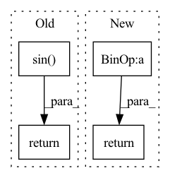

Pattern ID :838
Before Change
// \end{align}
//
// for $i \in {1, 2, ..., \frac{d}{2}}$
rx = (x * idx_theta2.cos()[:, None, None, :]) + (neg_half_x * idx_theta2.sin() [:, None, None, :])
//
return rx
class RotaryPEMultiHeadAttention(MultiHeadAttention):After Change
// \end{align}
//
// for $i \in {1, 2, ..., \frac{d}{2}}$
x_rope = (x_rope * self.cos_cached[:x.shape[0]]) + (neg_half_x * self.sin_cached[:x.shape[0]])
//
return torch.cat((x_rope, x_pass), dim=-1)
class RotaryPEMultiHeadAttention(MultiHeadAttention):In pattern: SUPERPATTERN
Frequency: 3
Non-data size: 4
Instances Fragment ID: 3107823
Project Name: lab-ml/nn
Commit Name: 0ce65adf9e602321109528b05cf99fccb16cd2de
Time: 2022-06-03
Author: vpjayasiri@gmail.com
File Name: labml_nn/transformers/rope/__init__.py
M Class Name: RotaryPositionalEmbeddings
N Class Name: RotaryPositionalEmbeddings
M Method Name: forward(2)
N Method Name: forward(2)
M Parent Class: nn.Module
N Parent Class: nn.Module
M File Name: labml_nn/transformers/rope/__init__.py
N File Name: labml_nn/transformers/rope/__init__.py
M Start Line: 132
M End Line: 163
N Start Line: 171
N End Line: 193
Before Change
positions = rearrange(positions, "b t -> b t 1")
product = positions * self.freq.to(x)
pos_emb = torch.sin( product + self.cos_shifts.to(x))
if not self.batch_first:
pos_emb = rearrange(pos_emb, "b t c -> t b c")
return pos_emb
def augment_positions(self, positions: Tensor):
assert self.max_global_scaling >= 1After Change
self.register_buffer("cos_shifts", cos_shifts)
def forward(self, x: Tensor) -> Tensor:
return x + self.compute_pos_emb(x)
def compute_pos_emb(self, x: Tensor) -> Tensor:
if self.batch_first: Fragment ID: 3107816
Project Name: gcambara/cape
Commit Name: f442553b2eb7d5f143abf7de2da8e550fb058ed5
Time: 2021-12-05
Author: guillermocambara@gmail.com
File Name: cape/cape.py
M Class Name: CAPE1d
N Class Name: CAPE1d
M Method Name: forward(2)
N Method Name: forward(2)
M Parent Class: nn.Module
N Parent Class: nn.Module
M File Name: cape/cape.py
N File Name: cape/cape.py
M Start Line: 32
M End Line: 49
N Start Line: 32
N End Line: 32
Before Change
l = n + context_len
t = torch.arange(l - 1, -1, -1, device = device).type_as(self.inv_freq)
sinusoid_inp = einsum("i , j -> i j", t, self.inv_freq)
emb = torch.cat((sinusoid_inp.sin() , sinusoid_inp.cos()), dim = -1)
return emb
// main classes
After Change
device = self.relative_attention_bias.weight.device
q_pos = torch.arange(qlen, dtype = torch.long, device = device)
k_pos = torch.arange(klen, dtype = torch.long, device = device)
rel_pos = k_pos[None, :] - q_pos[:, None]
rp_bucket = self._relative_position_bucket(rel_pos, causal = self.causal, num_buckets = self.num_buckets)
values = self.relative_attention_bias(rp_bucket)
return rearrange(values, "i j h -> () h i j")
// main classes
Fragment ID: 3107813
Project Name: lucidrains/memformer
Commit Name: 7ec1c1f60129a90b9abc6fd3b893a4ceb16f98e0
Time: 2020-10-31
Author: lucidrains@gmail.com
File Name: memformer/memformer.py
M Class Name: SinusoidalEmbedding
N Class Name: RelativePositionBias
M Method Name: forward(3)
N Method Name: forward(3)
M Parent Class: nn.Module
N Parent Class: nn.Module
M File Name: memformer/memformer.py
N File Name: memformer/memformer.py
M Start Line: 53
M End Line: 58
N Start Line: 71
N End Line: 77